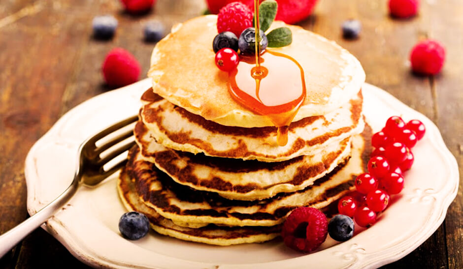

Panqueca Americana

Panqueca clássica Americana
Para o café da manhã ou brunch, as panquecas americanas conquistaram o paladar dos brasileiros e são muito fáceis de fazer.
Ingredientes
- Farinha de trigo
- Açúcar
- Ovos
- Fermento
- Leite
- Manteiga derretida
- Pitada de sal
Modo de Preparo
- Misture em um recipiente: a farinha, o açúcar, o fermento e o sal.
- Acrescente os líquidos aos secos, sem misturar em excesso.
- Aqueça e unte a frigideira com óleo, coloque a massa no centro, cerca de 1/4 xícara por panqueca.
- Vire a massa para assar do outro lado e está pronto!
- Acrescente as coberturas que preferir: mel, frutas, chocolate.